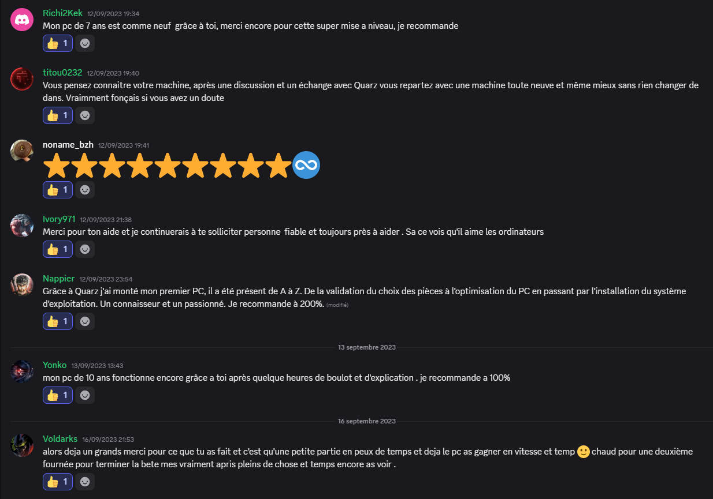
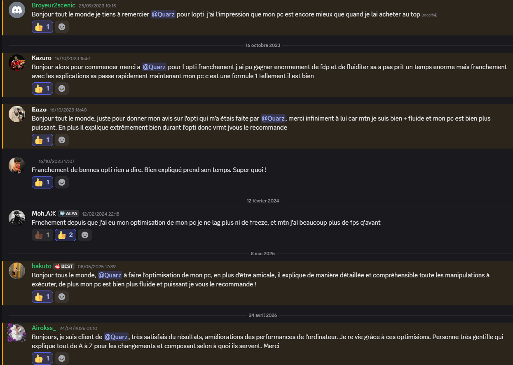

Quelques retours d'utilisateurs accompagnés par BoostPC, partagés directement sur le serveur Discord.
"Mon PC de 7 ans est comme neuf grâce à toi, merci encore pour cette super mise à niveau, je recommande."
"Grâce à Quarz, j'ai monté mon premier PC, il a été présent de A à Z, de la validation du choix des pièces à l'optimisation en passant par l'installation du système. Un connaisseur et un passionné, je recommande à 200%."
"Bonjour, je suis client de Quarz, très satisfait des résultats, amélioration des performances de l'ordinateur. Personne très gentille qui explique tout de A à Z pour les changements et composants selon à quoi ils servent. Merci."
"Quarz m'a très bien expliqué et appliqué tout ce qu'il fallait faire pour optimiser mon PC, il est de confiance et très efficace, ma mémoire utilisée a été divisée par deux. Il donne aussi de très bons conseils sur les logiciels à utiliser ou non. Allez-y les yeux fermés."
"Merci pour ton aide, je continuerai à te solliciter, personne fiable et toujours prête à aider. Ça se voit qu'il aime les ordinateurs."
"Depuis que j'ai eu l'optimisation de mon PC, je ne lag plus, ni ne freeze, et j'ai maintenant beaucoup plus de FPS qu'avant."

